In the hustle of a daily routine, a professional finds themselves navigating through a series of client meetings scattered across different locations. However, the smooth flow of their day is abruptly interrupted by unexpected vehicle problems. Faced with this challenge, they must quickly adapt their plans to ensure they can still meet each client punctually. Despite the inconvenience, they remain determined to maintain the integrity of their commitments, employing creative solutions to overcome the transportation setbacks. With resilience and resourcefulness, they strive to uphold their reputation for reliability and professionalism, even amidst unforeseen obstacles.
The project's objective is to connect car owners with mechanics, offering them convenience and preventing roadside emergencies. This app operates 24/7, allowing users to locate nearby service centers, auto spare parts, showrooms, and access emergency assistance. With features like real-time tracking and instant communication with mechanics, users can quickly arrange repairs and request quotations. Additionally, users can buy or sell cars and access relevant information on various car-related services online, tailored to their specific needs.

"It took over 8 weeks and more than 70 wireframes to develop the application, with me serving as the sole designer responsible for every aspect, from user research to UI design."

Survey & Opinion
This aims to gather insights on automotive car preferences and opinions.
Structure your pages and layers for better collaboration with cross functional teams
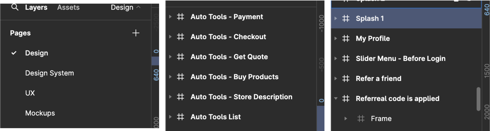Research on Heuristic Evaluation
 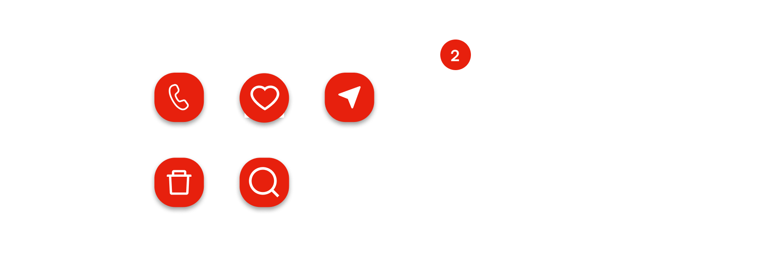   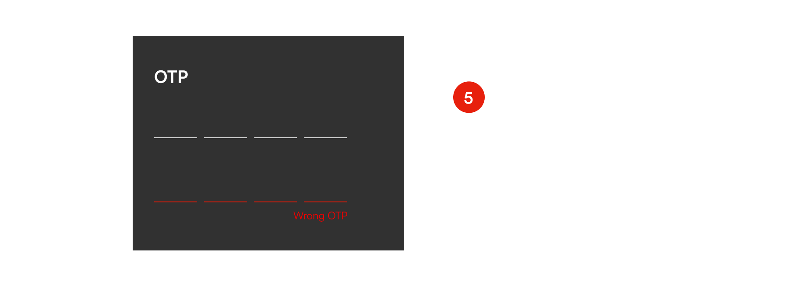 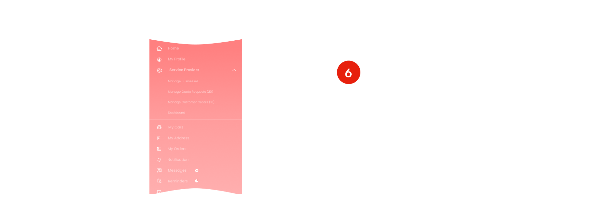 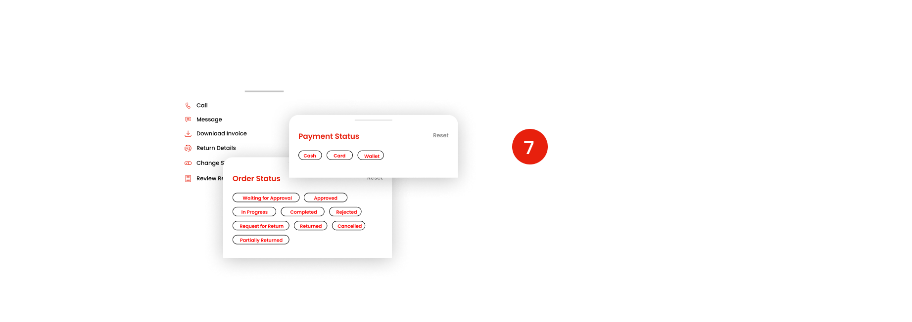 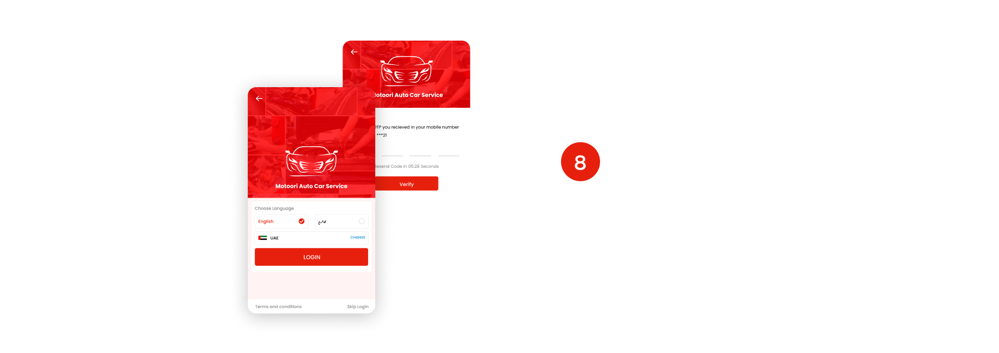 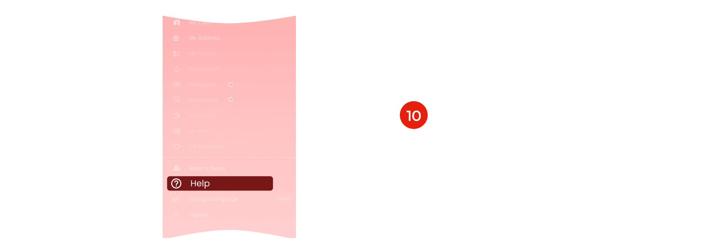
All works © Surya Narayanan 2022